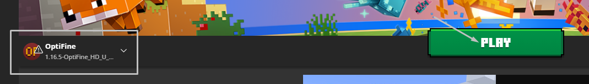
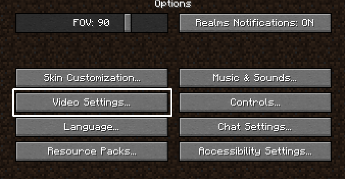
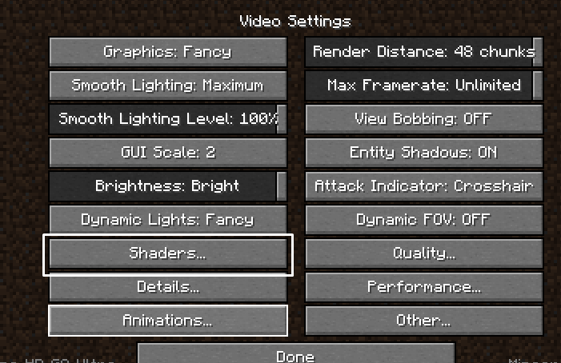
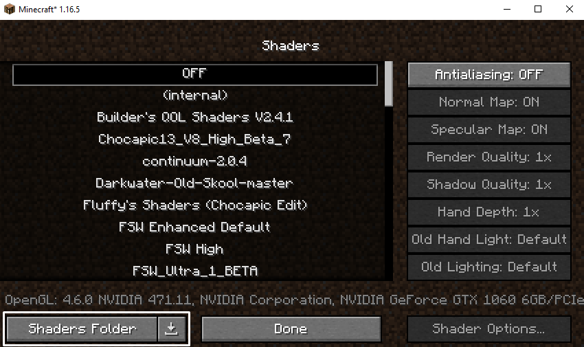
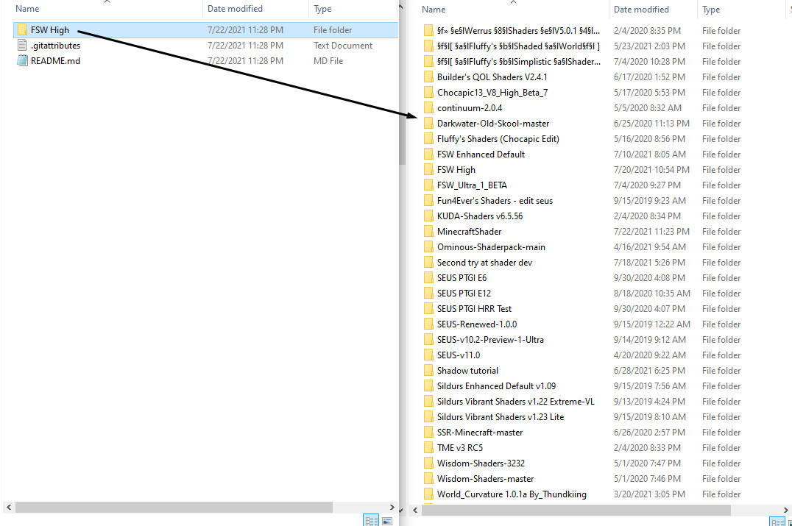
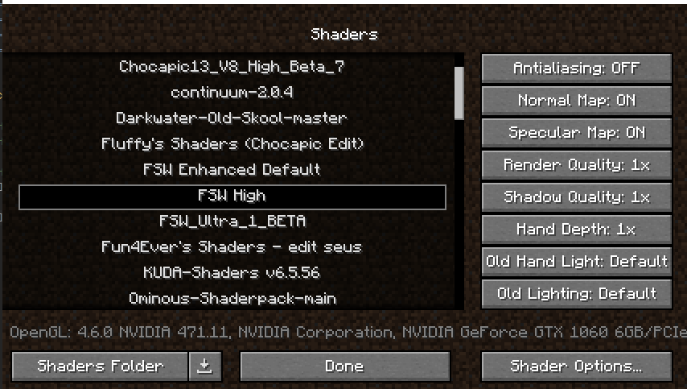

Installation:
Tested and supported Optifine versions: 1.8.9 - 1.16.5 Most stable Optifine version: 1.14.4
1. Download and install Minecraft, setup your game profile of the version you want to run.
2. Download and run the Optifine jar file and click the Install button. It will install a new Optifine profile in your minecraft launcher.
3. Run the minecraft launcher and select the newly created Optifine profile.
4. Start the game.
5. Go to Options -> Video Setings -> Shaders and press the "Shaders Folder" button at the bottom left of the screen.
6. Download the ShaderPack and extract the zip.
7. Click through the folders until you find a folder named closely to the name of the ShaderPack you downloaded.
8. Drag and drop the ShaderPack you downloaded into the "Shaders folder" window.
9. Select the ShaderPack you downloaded from the list ingame and enjoy!
Visual Installation:
Install Optifine
.png)
Choose Optifine profile and run Minecraft

Click the "Options" button
.png)
Click the "Video Settings" button

Click the "Shaders" button

Click the "Shaders Folder" button

Drag and drop the ShaderPack you downloaded into the recently opened window (ShaderPack Folder)

Click the ShaderPack you downloaded and enjoy!
